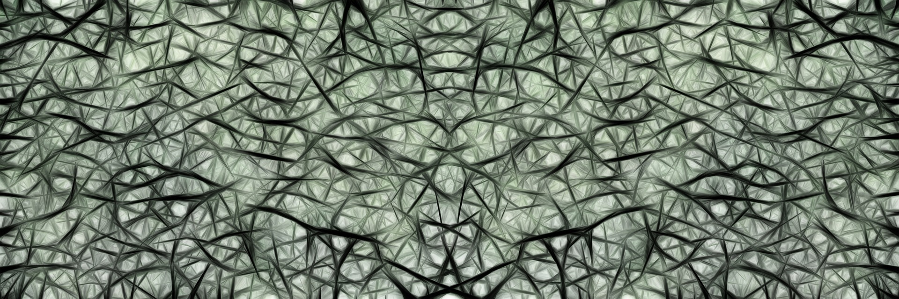

Capture des périodes pendulaires au moyen de photorésistances pour la recherche de la masse terrestre

Auteurs: Noguerón Méndez, José Antonio y Javier Moreno, Francisco Anthony
Publié le 22-07-2022
La masse de la terre a été d'une grande importance à travers l'histoire, ceci étant un élément important pour les plus grandes découvertes de l'humanité, dans cet article un modèle théorique et expérimental sera développé afin d'obtenir la masse terrestre. Pour le modèle théorique, la mécanique du mouvement d'un pendule et la loi de la gravitation universelle seront utilisées, plus tard un instrument de mesure électronique a été développé, de cette manière il serait possible de capturer les mouvements du pendule pour son application théorique.
Lire plus
Applications du génie biomédical pour le diagnostic des maladies

Auteurs:Noguerón Méndez José Antonio, Javier Moreno Francisco Anthony, Louredes Farughi Salazar Medina, Victor Guillermo Miranda Martinez y Joselin Nicole Raymundo Rimachi
Publié le 24-02-2022
L'objectif principal de ce travail est de présenter les applications du Génie Biomédical pour le diagnostic des maladies, basées sur deux méthodes d'enregistrement des signaux biomédicaux, qui sont l'électromyographie et l'électroneurographie. Chacune des méthodes et leur utilité dans le diagnostic des maladies neuromusculaires grâce à l'utilisation d'électrodes qui stockent des charges négatives et positives sont décrites. De plus, quelles sont les difficultés à diagnostiquer ces maladies, ainsi que les avantages d'utiliser les méthodes susmentionnées et les tests qui les soutiennent. De ce qui précède, il est conclu que le génie biomédical grâce à l'utilisation des méthodes d'électromyographie et d'électroneurographie a permis aux médecins de disposer d'un outil fiable pour diagnostiquer les maladies neuromusculaires.
Lire plus